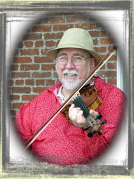

Biography
Who Is This Russ Childers?
 Photograph by Tom Coates
For more than 35 years, Russ has been making music in the southern Ohio/northern Kentucky area. Whether as banjo player with the Rabbit Hash String Band or fiddle player with the husband-wife team Bear Foot or one-man-band-and-storyteller, his music defines him. His banjo playing has won him many state awards and even made him a Kentucky Colonel! In his fifteen years of professional storytelling, he engages in the time-honored tradition – the oral passage of information. As he once learned aspects of his eastern Kentucky heritage from his father and grandfather, so he now passes it on. But he continues to be a student of banjo player Elmer Bird of West Virginia and fiddle player Tommy Taylor of Northern Kentucky. Just as his Appalachian music is recycled from an earlier time, his instrument building workshops teach children to make music on reclaimed materials. This echoes the lifestyle of his ancestors who often found it necessary to fashion useful things from reused objects.
And Why Is He Singing?
The earliest form of music in his family was singing; he sings today to keep the images of them alive in his imagination while his fingers dance on the strings. In his music and storytelling programs, he hopes to present the inventiveness of his ancestors. He demonstrates that ingenuity is available to all who learn how to tap into it. His best advice comes from an old song:
If you want any more, you’ve got to sing it yourself.
Storytelling
“And that’s a TRUE story…” wherein Russ outsmarts himself in tall tales, Jack tales, true tales, and dog tails. Storytelling is an important means of passing on cultural beliefs and family history. Russ urges his listeners to gather their own family stories.
Recycled Instrument Making
In the true Appalachian spirit of making do with what is at hand, Russ shows how kitchen trash is transformed into musical instruments. Participants learn to recycle spoons, tin cans, bottle caps, and broomsticks into homemade music.
Songs & Singing
Russ demonstrates painlessly how the history of a region is passed on through songs, play parties, and other traditional mountain games. Watch out! He’ll get you dancing ‘fore you know what you’re about.
Traditional Appalachian Music
On banjo, fiddle, guitar, or homemade dulcimer, Russ plays a style that predates bluegrass music by a century. Whether you call it “clawhammer,” “frailing,” or “knocking” the banjo, Russ carries on traditions of generations of mountain folk.